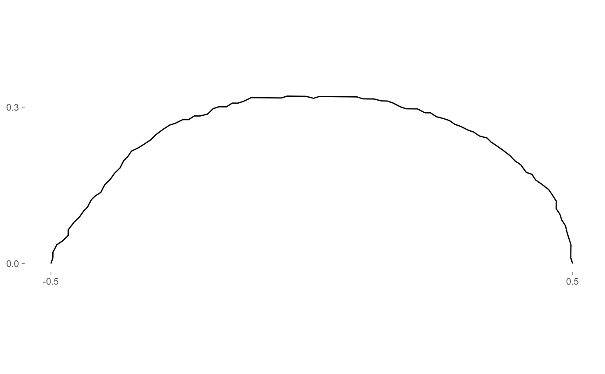
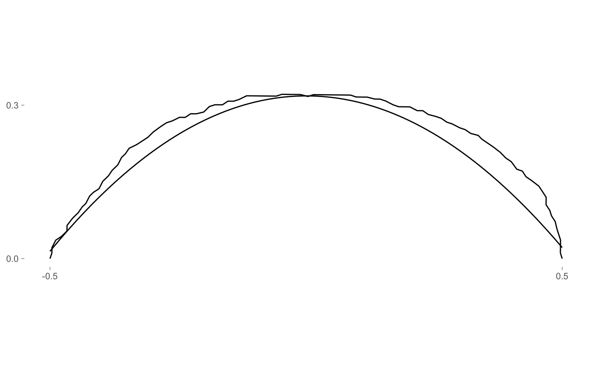

opoly.RdCalculates orthogonal polynomial coefficients using stats::lm
opoly( x, degree, raw, drop_coo, from_coo = coo, to_coe = { { coe } }, ... ) opoly_i(x, nb_pts, from_coe, ...)
| x | |
|---|---|
| degree | polynomial degree for the fit ( |
| raw |
|
| drop_coo |
|
| from_coo, to_coe | column names |
| ... | for generics. Useless here. |
| nb_pts | number of points to sample and on which to calculate polynomials |
| from_coe | column name for inverse method |
a list with components when applied on a single shape:
coeff the coefficients (including the intercept)
ortho whether orthogonal or natural polynomials were fitted
degree degree of the fit (could be retrieved through coeff though)
baseline1 the first baseline point (so far the first point)
baseline2 the second baseline point (so far the last point)
r2 the r2 from the fit
mod the raw lm model
Curves must be registered on a bookstein baseline, with the first coordinates on (-0.5, 0) and the last on (0.5, 0). Use coo_bookstein
A polynomial of degree n use this fit:
\(y = a_{0} + a_{1}x^1 + a_{...}x^{...} + a_{n}x^{n}\)
And thus returns n+1 coefficients. The +1 being $a_0$ ie the intercept.
Orthogonal polynomials are also called Legendre's polynomials. They are preferred over natural polynomials since adding a degree does not change lower order coefficients.
In retired Momocs, baseline was free and not necessarily Bookstein. Not sure this was really helpful but I'm sure this overcomplicated coding. If your shapes are not registered on Bookstein coordinates, you will be messaged (not for coo_single though)
opoly_i: inverse opoly method

op <- o %>% opoly(degree=3) op#> # A tibble: 1 x 4 #> a0 a1 a2 a3 #> <dbl> <dbl> <dbl> <dbl> #> 1 0.216 0.0154 -0.996 0.00544 #> ❯coe_single with 4 coefficientsop %>% class#> [1] "opoly_single" "coe_single" "tbl_df" "tbl" "data.frame"
#> ! opoly: 'degree' not provided and set to 5#> # A tibble: 3 x 7 #> coo var domes view ind coe coe_i #> <list<coo_single[> <fct> <fct> <fct> <fct> <list<coe_single> <list<coo_single> #> 1 <tibble [99 × 2]> Aglan cult VD O10 <tibble [1 × 6]> <tibble [120 × 2… #> 2 <tibble [96 × 2]> Aglan cult VL O10 <tibble [1 × 6]> <tibble [120 × 2… #> 3 <tibble [95 × 2]> Aglan cult VD O11 <tibble [1 × 6]> <tibble [120 × 2… #> ❯mom_tbl